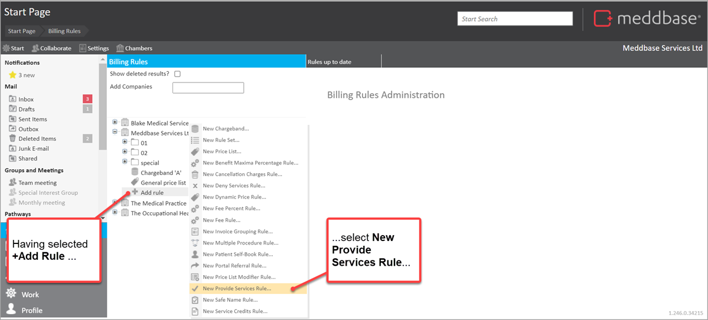
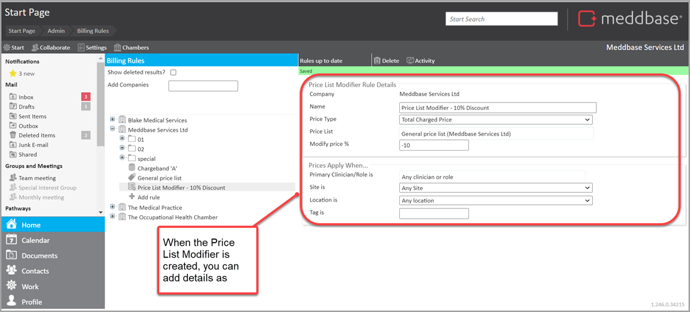
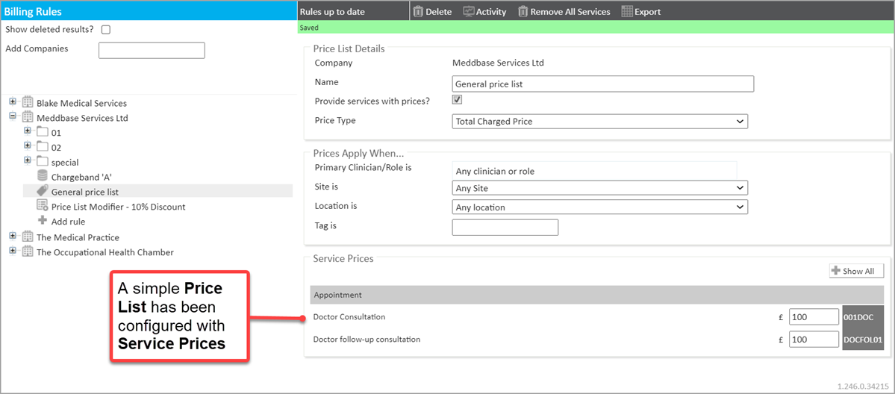
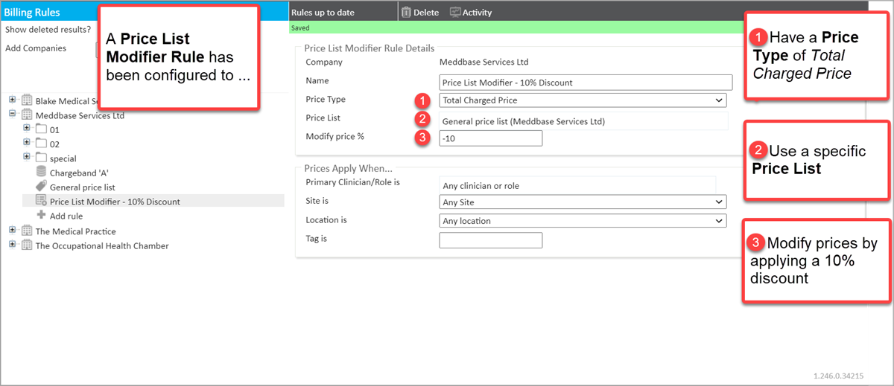
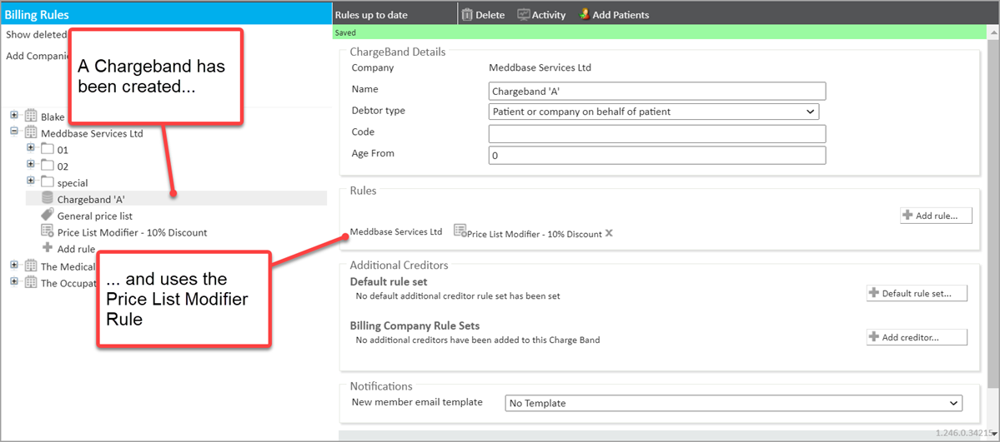
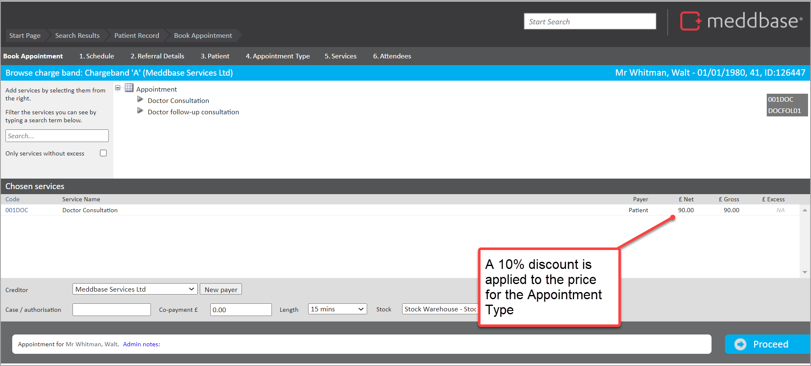

There may be situations where you want to modify a Price List by a specific percentage. This could be to:
This is where the Price List Modifier Rule can help.
This article explains:
It enables the modification of an existing Price List by a specified percentage on a Charge Band. This is either for the total price charged or in the context of Benefit Maxima.
It can also be set to apply:
What needs to be in place before you create the Price List Modifier Rule?
Before the Price List Modifier Rule is created you need to have:
How do you set up the Price List Modifier Rule?
To set up a Price List Modifier Rule:
1. Go to Start Page > Admin > Billing Rules
2. Select the required company under which the Price List Modifier Rule should be created
3. Click on the + Add rule under the company to which the rule belongs
4. From the menu that appears, select New Price List Modifier Rule...

You are presented with a Price List Modifier Rule Details panel on the right-hand side of the screen. This contains a range of fields and sections as outlined in the table below.
| Section / Field | Explanation |
| Price List Modifier Rule Details | |
| Name | Requires you to set the name of the Price List Modifier rule that will be displayed in the Billing rules list. |
| Price Type | Requires you to select a value from a pick-list. Either Total Charged Price or Benefit Maxima. |
| Price List | Requires you to select the existing Price List on which the Price List Modifier Rule is based. |
| Modify price % | Requires you to set the percentage by which the Price List should be modified. A discount of 10% would be recorded as -10. An uplift of 5% would be recorded as 5. |
| Prices Apply When... | |
| Primary Clinician/Role is | Enables you to define that the rule only applies when a specific clinician or user in a role is attending |
| Site is | Enables you to define that the rule only applies if the appointment is at a specific site |
| Location is | Enables you to define that the rule only applies if the appointment is at a specific location within a site |
| Tag is | Enables you to define that the rule only applies if the 'Billing Tag' for a session is equal to the text field |
5. Set the Name for the Price List Modifier rule
6. Set the Price Type for the Rule
7. Set the values for Prices Apply When... as needed

The Price List Modifier Rule is automatically saved as you update it.
Once you have created the Price List Modifier Rule, you will need to:
1. Add the rule to a Charge Band
2. Or add it to a Rule Set within a Charge Band.
When a Price List Modifier Rule is added to a Charge Band, you do not need a Price List added to the same Charge Band.
In a simple scenario where:
1. A 'General Price List' has been configured with 2 appointment types each with a price of £100

2. A Price List Modifier Rule has been configured to

3. A 'Charge Band A' has been created and the Price List Modifier created above has been applied to it.

4. A patient has this 'Charge Band A' where the Price List Modifier Rule is in use
When
5. An appointment booking of the type Doctor Consultation is made for the patient via the Clinician schedule or Clinician Slot Finder
Then
6. The 10% discount is applied from the standard Price List price of £100 for a Doctor Consultation
7. So that the price is shown as £90 in the Book Appointment screen

Price List Modifiers can be increases as well as decreases in prices. So as well as giving a 10% discount, you could use them to cause a 10% uplift.